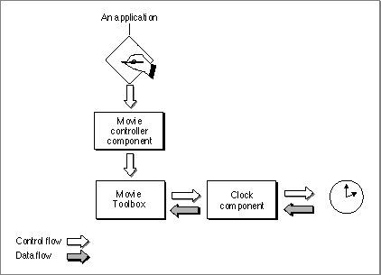

About Clock Components
Clock components provide two basic services: they generate time information and schedule time-based callback events. In QuickTime, the Movie Toolbox is the primary user of clock components. Specifically, the Movie Toolbox uses clock components to provide basic timing to time bases. In general, clock components derive their timing information from some external source. For example, a clock component could use the Macintosh tick count to provide its basic timing. Alternatively, a clock component could use some special hardware installed in the Macintosh computer to provide its basic timing. Figure 11-1 shows the relationships between an application, the movie controller component, the Movie Toolbox, and a clock component.Figure 11-1 Relationships of an application, the movie controller component, the Movie Toolbox, and a clock component

Clock components may also support time-based callback events. The Movie Toolbox's time base functions allow applications and other programs to schedule functions to be called in specified circumstances. Since time bases derive their time information from clock components, ultimate responsibility for servicing these callback functions also falls to clock components. The Movie Toolbox provides a set of support functions that your clock component can use to manage its callback events--these functions are described later in this chapter.
Your clock component is not required to support callback functions. You can
delegate this responsibility to another clock component. "Component Capability Flags for Clocks" on page 11-4 describes how you can tell the Component Manager that your clock component does not support callback functions.